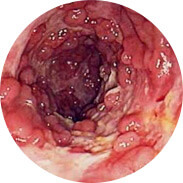
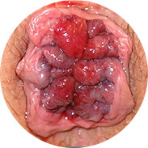

Лёгкость применения Быстрый результат
Бережная забота о Вашем здоровье Предотвращение рецедивов
Избавьтесь от геморроя прямо сейчас!
Быстрое лечение в домашних условиях
- Устраняет боль с первого применения
- Мгновенно останавливает кровотечение
- Избавляет от зуда и жжения
- Устраняет геморроидальные узлы
У 99% вылечившихся больных больше никогда не возникает геморрой.
новая цена
978 руб.1956 руб.
Почему Свечи G24 от геморроя рекомендованы всем?
- Полное избавление от геморроя уже через 21 день.
- 99% пользующихся Свечами G24 навсегда избавляются от геморроя.
- Ощущение свободы и лёгкости уже через 4 недели применения.
- 100% оригинальная продукция, прошедшая сертификацию.
- Цена упаковки свечей дешевле, чем любой другой метод лечения.
- Минимум затрат времени: всего 5 минут в день.
- Максимально удобная упаковка свечей G24 позволяет Вам бережно провести курс лечения.
Причины появления геморроя
-
Наследственность
Выяснилось, что у 85% кровных родственников тоже наблюдались симптомы геморроя
-
Малоподвижный образ жизни
Это, в первую очередь, касается водителей и офисных работников
-
Беременность
Увеличившаяся матка пережимает сосуды ануса, из-за чего возникают внешние геморроидальные узлы
-
Половая принадлежность
У женщин геморрой от малоподвижного образа жизни и гормональных скачков, а у мужчин - от чрезмерных нагрузок и поднятий тяжести
-
Механический фактор
Травма, ожоги и другие механические воздействия на прямую кишку и анус
Как Свечи G24 помогут Вам избавиться от геморроя?
Действие свечей G24 и их свойства обусловлены особым составом препарата и специальной технологией производства. Они содержат более 30 натуральных компонентов.
Активные вещества комплексно, усиливая действие друг друга, устраняют основные симптомы геморроя:
- Кровотечение во время дефекации или примесь крови в каловых массах.
- Выпадение узлов из прямой кишки.
- Ощущение инородного тела, чувство тяжести.
- Зуд и жжение в области заднего прохода.
- Боль при дефекации, ходьбе и в положении сидя.
Чем опасен геморрой у мужчин и женщин?
-  Воспаление и загноение слизистой прямой кишки
-  Кровотечения могут привести к развитию анемии
- Повышение температуры тела, при сильных воспалениях, может привести к лихорадке
- И самое страшное - рак прямой кишки!
Эффективность свечей G24 подтверждена исследованиями
Масштабные клинические исследования свечей G24 были проведены в Российском Медицинском Центре (Москва) в 2016 году. Всего в исследованиях принимало участие более 1000 мужчин и женщин с геморроем разной степени. Все испытуемые использовали Свечи G24 на протяжении 3 недель. Результаты исследования поразили даже врачей!
Другие средства
Свечи G24
Более 95% мужчин и 98% женщин заметили значительные улучшения уже через несколько дней после начала применения свечей G24, более 90% участников излечились от имеющегося у них заболевания полностью. Ни одно из существующих на сегодняшний день средств для лечения геморроя не обладает такой высокими показателями эффективности!
начать лечение прямо сейчасПочему выбирают Свечи G24?
100% натуральный состав препарата – 100% гарантированный результат.
Экстракт
прополиса
Обладает антимикробным , обладает анестезирующими свойствами,и может использоваться в качестве обезболивающего. Действует на слизистую оболочку оказывая местный обезболивающий эффект.
Гинкго
билоба
Способствует уменьшению
воспаления и отека

Крапива
Обладает кровоочистительным, противовоспалительным свойством, губительно действует на микробы
Зверобой и
семена амаранта
Обладают очень важным свойством – убивают микробы, т.е. бактерицидным и свойством антибиотика, улучшают микроциркуляцию крови и снимают мышечные спазмы
Каменное
масло
Смягчает поверхность кожи и способствует восстановлению слизистой
Экстракт конского каштана
Помогает справиться с воспалением, уменьшает симптомы даже при острой стадии. Также свойства растения помогают в укреплении стенок сосудов, находящихся в прямой кишке, уменьшают воспаление слизистых оболочек
Кедровая
живица
Способствует снижению вязкости
крови, укреплению и повышению
эластичности стенок кровеносных
сосудов, улучшает венозный
отток. Активизирует процесс
рассасывания геморроидальных
узлов
Мускус
бобра
Ускоряет процесс заживления трещин и способствует восстановлению поврежденной слизистой
Что говорят о свечах G24 врачи?
получить консультацию бесплатноКонечно, все индивидуально, и препараты от геморроя должны подбираться в зависимости от симптоматики болезни, уровня ее развития, а также определенных особенностей организма человека. Но начальные стадии формирования геморроя могут излечиваться, в большинстве случаев, полностью и лишь по средствам свечей G24.
Но если пациент, что называется, откладывал решение проблемы «в долгий ящик», позволил ей укорениться в организме и развиться до 3 или 4 стадии, когда геморроидальные шишки уже имеют большие размеры, то здесь уже одним курсом лечения не обойтись. Необходимо как минимум провести 3 курса лечения Свечами G24 и вести здоровый образ жизни.
Арсений Сулейманов, проктолог. Стаж – 23 года.
Внимание! Опасайтесь подделок!
Несмотря на то, что Свечи G24 относительно новый продукт для российского рынка, в Интернете появилось уже множество подделок.
Наш продукт продаётся в уникальной упаковке со специальным кодом внутри. Проверьте его наличие и убедитесь в оригинальности продукта!
Реальные отзывы покупателей
Из-за сидячей профессии программиста геморрой стал для меня неизбежен. Очень мучили боли при дефекации, зуд и небольшие кровянистые выделения. Обратился к проктологу в Москве, и он выписал мне Свечи G24 с прополисом. Свечи быстро убрали боль, уменьшились шишечки, и больше не было проблем с походом в туалет. Сейчас чувствую себя превосходно. Отрываюсь от работы на 5 минут, и делаю небольшую разминку по совету доктора, для того чтобы геморрой не вернулся снова.
Игорь, Саратов, 35 лет. Программист.
У меня геморрой 3-й степени. Это уже достаточно запущенная стадия заболевания. Оказалась перед выбором быстрого, но опасного оперативного вмешательства и длительного комплексного консервативного лечения. Я выбрала второй вариант, так как считаю, что лучше купить недешевые медикаменты, чем долго восстанавливаться после операции. В больнице мне прописали курс свечей G24. После 2-х недель лечения ощутила первые результаты. Узлы стали меньше, зуд, отеки и боли исчезли. Чувствую себя уже лучше. Но продолжаю курс лечения для максимального эффекта.
Екатерина, Москва, 26 лет. Бухгалтер.
После родов я столкнулась с неприятной проблемой, стыдно это писать но я не знала что тогда делать. Самое неприятное было то, что после похода в туалет приходилось вправлять все руками, а еще эти кровотечения... Подруга посоветовала эти свечи. Я была удивлена таким быстрым результатом. Геморрой ушёл через неделю-полторы, больше не появлялся.
Ирина, Новосибирск, 31 год. Парикмахер.
Как сделать заказ?
Избавьтесь от
геморроя навсегда с помощью натуральных свечей G24
новая цена
978 руб.